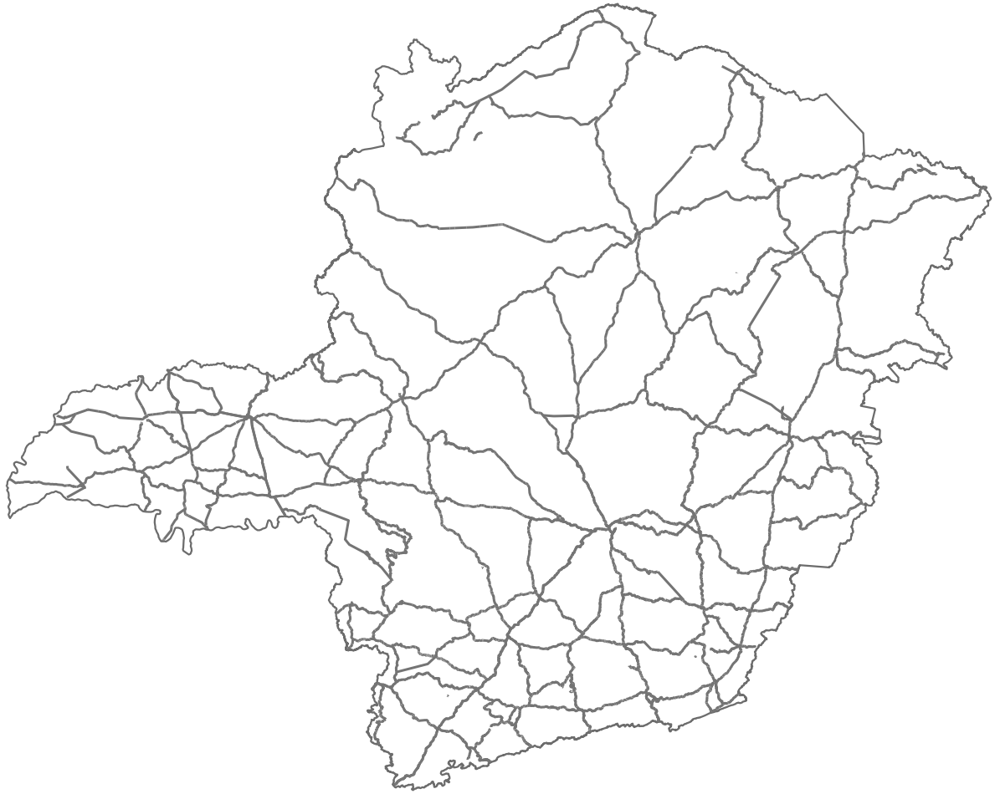

Araújo (2022)
Regras de associação entre características e acidentes.
Descreve padrões; não avalia predição futura.
A conectividade da malha viária ajuda a prever ocorrências semanais?
Apoiar fiscalização, inspeções e análises de engenharia viária.
Trechos conectados podem compartilhar fluxos e características.
Ao menos um acidente registrado.
Nenhum registro na semana elegível.
Várias ocorrências na mesma unidade continuam sendo um único positivo.
Fonte: relatório final, Introdução e Metodologia. Ausência de registro não comprova ausência de acidente.
Regras de associação entre características e acidentes.
Descreve padrões; não avalia predição futura.
Classificação de severidade em trechos críticos.
Outro alvo e outra população de análise.
GNNs para ocorrência e contagem de acidentes.
Outra malha, outras fontes e outra exposição.
GNN multimodal; contagem probabilística.
Mais modalidades ou outra formulação do alvo.
Fonte: relatório final, Trabalhos Relacionados. Não há comparação direta de métricas entre tarefas distintas.
8 arquivos anuais.
2026 é parcial.
Rede federal histórica recortada ao estado de MG.
ocorrências válidas
associadas à malha
98,75% de associação ao segmento mais próximo, em até 500 m.

Fonte: relatório final, Metodologia e Resultados. Distâncias, exclusões e motivos de rejeição foram registrados.
Identificação, controle de duplicatas e filtro para MG.
Data e hora: determinam a semana da ocorrência.
Posição usada na associação ao segmento mais próximo.
br e km: metadados, não preditores. Causa, gravidade e clima da ocorrência não entram nos modelos.
Tipo de via, número de faixas e velocidade máxima.
Comprimento, sinuosidade e associação espacial.
Adjacência, recorte federal e rastreabilidade.
IDs e referências não são preditores tabulares; só GNNs recebem adjacência.
Fonte: código de curadoria PRF, construção dos segmentos e atributos temporais; relatório final, Metodologia.
segmentos / nós
pares adjacentes únicos
componentes conexos
Fonte: relatório final, Grafo e estrutura da rede. Diagrama esquemático; componentes desconectados e isolados são mantidos.
Comprimento, tipo, faixas, velocidade máxima e sinuosidade.
Ano, mês, semana e codificação cíclica.
Imputação e indicadores explícitos.
Mesmos atributos + adjacência da malha.
Fonte: relatório final, Atributos e pré-processamento. Transformações ajustadas somente no treinamento.
260 semanas
Ajuste de modelos e pré-processamento.
52 semanas
Configurações e limiares congelados.
51 semanas
Sem novo ajuste.
29 semanas
Mesmo modelo e mesmos limiares.
5 sementes · 55 treinamentos
Incluindo ablações; redes neurais com 5 épocas.
AP como métrica principal
AUROC e F1 complementares; semanas completas.
de unidades segmento–semana
de unidades positivas: classe rara
Fonte: relatório final, Protocolo e Avaliação. AP = precisão média. A cobertura temporal é assumida, não comprovada.
AP em 2026 parcial
Nenhuma GNN superou os modelos tabulares.
Em 2025, AP ≈ 11,6 vezes a prevalência.
Fonte: resultados/metrics.csv; modelos completos, full_period. Médias de 5 sementes; hastes = 1 desvio-padrão.
| F1 positivo (%) | 2025 | 2026 parcial |
|---|---|---|
| Random Forest | 24,86 ± 0,12 | 24,77 ± 0,13 |
| XGBoost | 24,73 ± 0,42 | 24,84 ± 0,21 |
| MLP | 24,60 ± 0,13 | 24,71 ± 0,23 |
| GraphSAGE | 22,14 ± 0,34 | 22,68 ± 0,37 |
| GATv2 | 18,25 ± 0,74 | 19,05 ± 0,93 |
Média ± desvio-padrão (5 sementes). F1 positivo, não macro-F1.
Mesmo poucos falsos alarmes entre muitos negativos podem limitar a precisão.
Precisão ≈ 15–21% e revocação ≈ 24–38%: falsos positivos e acidentes não detectados.
Combina precisão (P) e revocação (R). Verdadeiros negativos não entram.
Fonte: resultados/metrics.csv e código de avaliação. Diagnóstico pelos erros observados; desbalanceamento não determina sozinho um F1 baixo.
| AP em 2025 (%) | GraphSAGE | GATv2 |
|---|---|---|
| Completo | 13,86 | 10,37 |
| Sem topologia | 13,26 | 13,70 |
| Sem atributos de via | 1,51 | 1,49 |
| Sem atributos temporais | 14,36 | 10,87 |
Sem topologia = sem mensagens dos vizinhos, mantendo a transformação do próprio nó.
Pequeno ganho no modelo completo.
Perda no modelo completo.
Diferença: completo menos sem topologia.
Fonte: resultados/ablations.csv. Diferenças descritivas; não demonstram causalidade nem significância estatística.
XGBoost · teste de 2025 · limiar congelado
Positivos entre as unidades sinalizadas.
Parcela dos positivos identificados.
E a maioria das unidades positivas não foi identificada.
Fonte: relatório final, Desempenho. Valores médios entre 5 sementes; ícones ilustrativos.
Cobertura dos arquivos assumida, não comprovada.
Malha estática de 2018; sem volume de tráfego para ajustar a exposição.
Históricos indisponíveis; redes treinadas por apenas 5 épocas.
Mesma geografia nos testes; sem avaliação em outro estado.
Dados reconstruídos e inferências repetidas.
diferença máxima nas métricas
Mesmo ambiente de bibliotecas; não é replicação externa independente.
Fonte: relatório final, Limitações e reprodução. Resultado condicionado a esta base e a este orçamento experimental.
16,75% em 2025.
17,23% em 2026 parcial.
Pequeno ganho no GraphSAGE; perda no GATv2.
Avaliação temporal, ablações e reprodução local.
Comprovar cobertura
e disponibilidade.
Incorporar tráfego
e mudanças da malha.
Avaliar novas configurações
em outro protocolo.
Obrigado. Perguntas?
Fonte: relatório final, Conclusão. Novos ajustes devem reconhecer que os testes atuais já foram observados.
Regras de associação entre veículos e acidentes em rodovias federais.
Dissertação · UFMG
A Machine Learning Approach for Classifying Road Accident Hotspots.
ISPRS International Journal of Geo-Information
Graph Neural Networks for Road Safety Modeling.
NeurIPS · Datasets and Benchmarks
Learning Multimodal Embeddings for Traffic Accident Prediction and Causal Estimation.
KDD / arXiv
Uncertainty-Aware Probabilistic Graph Neural Networks for Road-Level Traffic Accident Prediction.
arXiv
Precision–Recall em classificação desbalanceada.
PLOS ONE
Referências e anos conforme o relatório final. Método e conclusões sintetizados de docs/trab_final.tex.